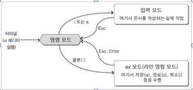
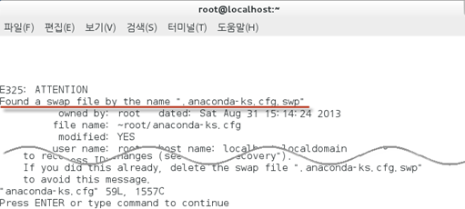
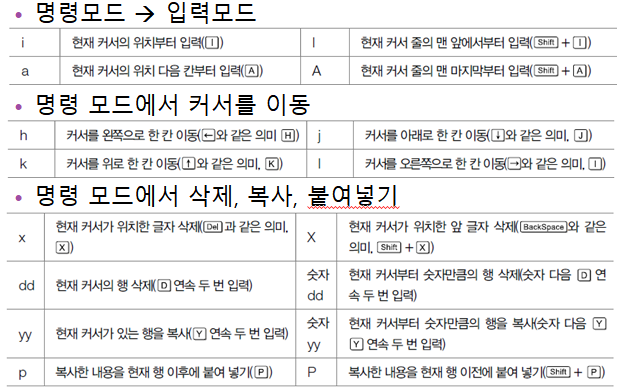

Linux 기초 및 활용 명령어
1. 개요 및 탄생 배경
1984년에 리차드 스톨만(Richard Stallman)에 의해서 GNU 프로젝트가 시작
GNU 프로젝트에서 제작한 소프트웨어를 지원함으로써 컴퓨터 프로그램의 복제, 변경, 소스 코드의 사용에 대한 제한을 철폐
‘모두가 공유할 수 있는 소프트웨어’를 만드는 것이 주 목적
프리웨어(Freeware, 무료 소프트웨어) 즉 진정한 자유(Freedom)에 대한 개념
자유 소프트웨어는 심지어 무료로 얻은 소프트웨어를 유상으로 판매할 자유도 보장
2. 레드햇 리눅스와 CentOS 리눅스
전 세계적으로 가장 유명한 배포판 중 하나가 레드햇(Red Hat)사에서 제작한 ‘레드햇 리눅스(Red Hat Linux)’
상용으로 판매되는 레드햇 엔터프라이즈 리눅스(Red Hat Enterprise Linux), 공개된 레드햇 엔터프라이즈 리눅스의 소스코드를 그대로 가져와서,
로고만 변경한 후에 다시 컴파일(또는 빌드)해서 만든 것이 CentOS
[1] 디렉터리 관련 명령어 : pwd, cd, ls, mkdir, rmdir
1. 현재 디렉터리의 전체 경로 확인
pwd
2. 디렉터리 내용 보기
ls
ls -F
3. 디렉터리 이동
cd 디렉터리명
cd /tmp
cd ~
4. 디렉터리 만들기
mkdir 디렉터리명
5. 디렉터리 삭제
rmdir 디렉터리명
[2] 파일 관련 명령어 : cat, more, less, head, tail, cp, mv, rm, touch, grep
1. 파일 내용 연속 출력
cat file명
2. 화면에 페이지 단위로 파일 내용 출력
more 파일명
3.지나간 내용도 확인 가능
less file명
4. 파일 앞부분 출력
head -n line수 파일명
5. 파일 뒷부분 출력
tail -n line수 파일명
6. 빈 파일 생성하기
touch newFile.txt
7. 파일 또는 디렉토리 복사하기
cp
#두 인자가 모두 파일인 경우 - 파일을 다른 파일로 복사
#두 인자가 디렉터리인 경우 - 파일을 해당 디렉터리 아래로 복
cp newFile.txt newFile2.txt
8. 파일과 디렉터리의 이름 변경하거나 위치 이동하기
#mv
#파일을 파일로 이동
mv newFile.txt newFile2.txt
#두번째 인자가 디렉터리인 경우 - 원본 파일을 지정한 디렉터리로 이동
9. 파일 삭제하기
#rm [옵션] 파일명/디렉터리명
rm newFile2.txt
rm -r /폴더명
10. 파일 내용 검색하기
#grep [옵션] 패턴 [파일명]
grep hi newFile.txt
[3] vi 편집기 사용하기
vi 에디터 사용법 개요도

vi의 비정상 종료 후 다시 열었을 때

vi 기능 요약
